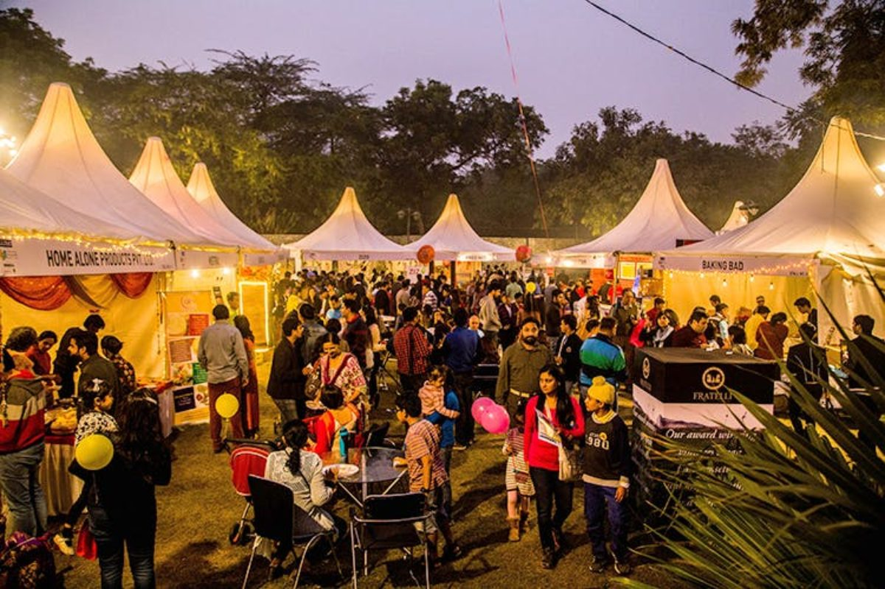

History
Food Festivals throughout the world are often based on the traditional farming techniques, seasons Food festivals are related to food culture of an area, whether through the preparation of food served or the time period in which the festival is celebrated. Food festivals are considered strengthening agents for local cultural heritage, and simultaneously celebrate this cultural heritage while also commodifying it for a broader national or international audience. While historically aligned with culturally significant food harvesting periods, contemporary food festivals are usually associated with businesses entities or nonprofit organizations and engage a great deal of marketing for their festivals, since their success is measured off how much revenue they generate for the local community, region, or entity putting on the event. Modern food festivals are also a large part of the food tourism industry, which uses food festivals and regional cuisine to support the broader tourism industry of a particular locality.
Food Tourism
Food festivals are quickly becoming part of a vast food tourism industry. Food tourism itself has become an important part of the tourism industry worldwide, and the presence of food festivals shown to support local industry development. Food festivals are an important part of destination branding for many regions, creating an event-based reason for individuals to visit otherwise unattractive localities and promote local products and services outside of an urban product environment. Several case studies have shown that food festivals can potentially improve social sustainability while also heavily supporting the tourism and hospitality industries. Food tourism is also an important reason why people attend food festivals around the world. Studies have shown that engagement with food tourism indicates that an individual will attend festivals again in the future, indicating a cooperative element to food tourism and food festival attendance
List of food and drink festivals
| Festival name | Type | Country |
|---|---|---|
| Thapar Food Festival | Food festival | (
.png) )india )india |
| Melbourne Food and Wine Festival | Wine festival/Food | (
.png) )Australia )Australia |
| Jakarta Fashion & Food Festival | Food festival | (
.png) Indonesia Indonesia |
| Caxton Street Seafood and Wine Festival | Wine festival/Food | (
)Australia |
Download PDF or purchase the book below